He consistently demonstrated strong UX thinking, creativity, and professionalism.
Kevin Appleby CEO, RUHL TecDesignPRODUCT DESIGNER
Dhrumil Shah
I help diverse teams turn complex products into clear, useful, and trusted experiences.
AI (UX + Technology + Marketing)
Strong UX mindset, focused on
usability, accessibility, and
clarity.
Goes the extra mile, stays
mindful of timelines, and
provides regular updates.
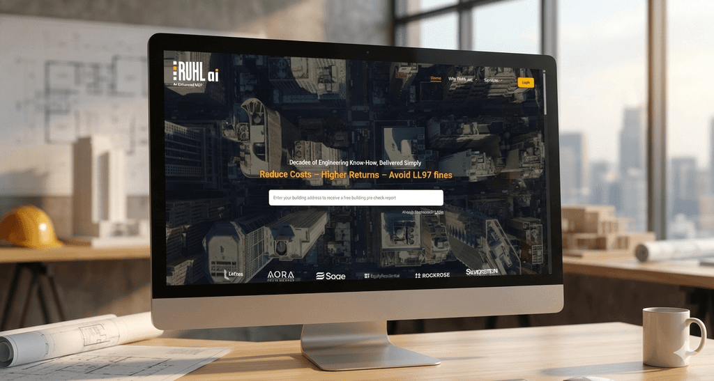
Sustainability SaaS
RUHL AI
Helping building owners understand complex sustainability regulations and identify practical next steps.
- Role
- Product Designer + Frontend Developer
- Collaboration
- Cross-functional team
Designed and implemented a 16-page responsive experience
View case study →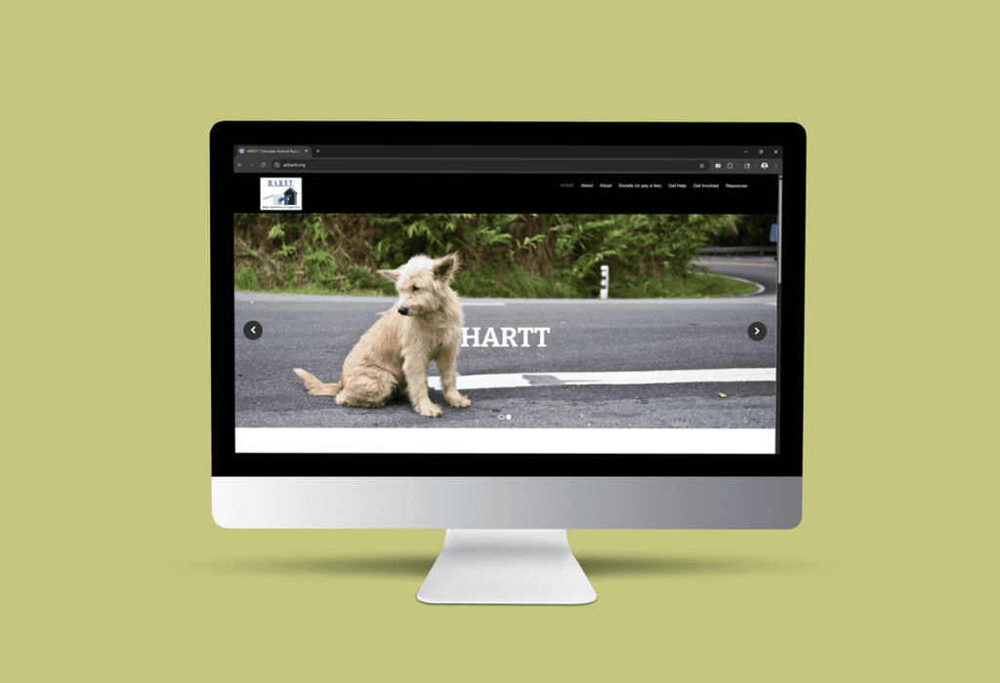
Healthcare Platform
TrialBridge
Helping people navigate complex clinical trial discovery and management workflows with clarity.
- Role
- Product Designer
- Collaboration
- Clinical team collaboration
High-fidelity UX across 25+ workflows
View case study →Accessibility Audit
AZHARTT
Identifying accessibility barriers across screen reader, keyboard-only, low-vision, and motor-impaired experiences.
- Role
- UX Evaluator + Accessibility Reviewer
- Collaboration
- Self-led
30+ accessibility issues documented and resolved
View case study →AI-supported concept exploration
TODO: Add a concise note about the prototype, audience, and what was learned.
Playable systems experiment
TODO: Add gameplay context and the design or technical learning from the build.
Process, prompts, and facilitation
TODO: Add workshop examples or artifacts when available.
About
A designer who connects product clarity with human context.
I bridge engineering, business, design, and users to create products that are usable, accessible, and market-ready.
Outside project work, I sketch, travel, observe everyday UX, and enjoy building with collaborative teams.
Beyond work
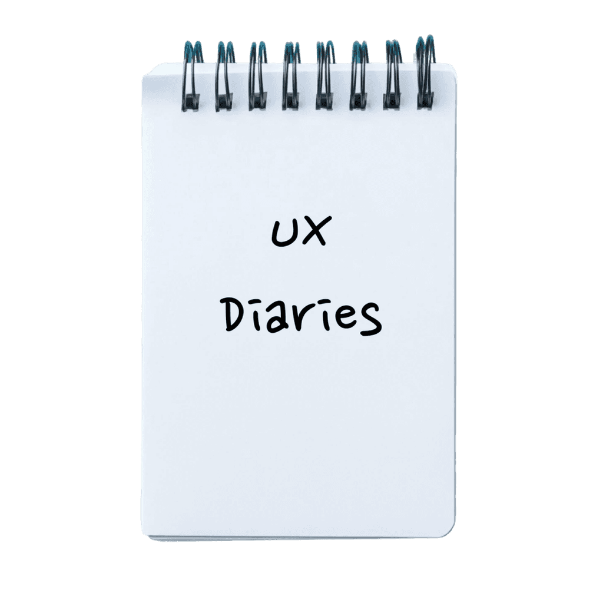
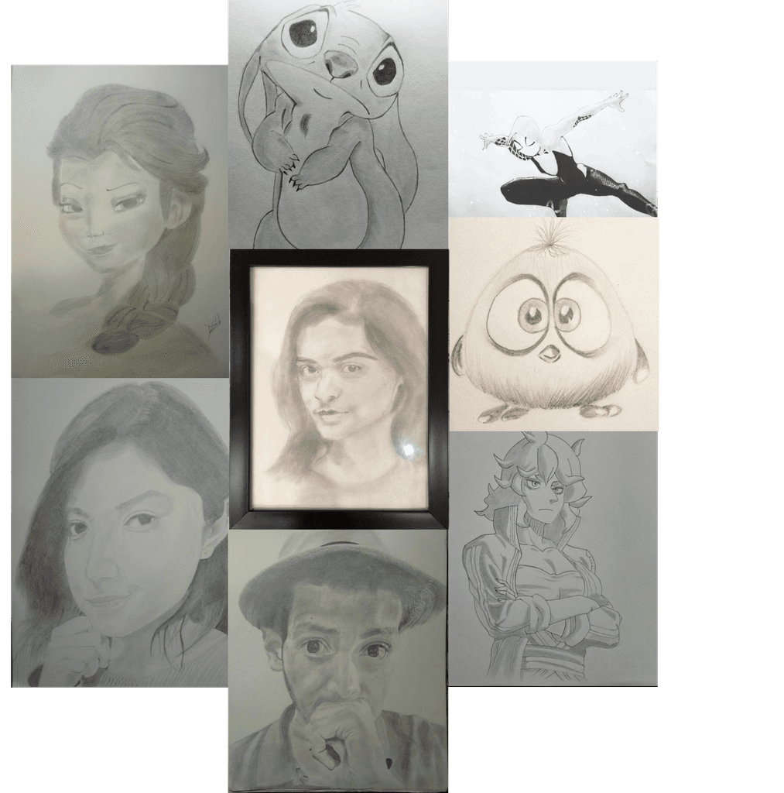
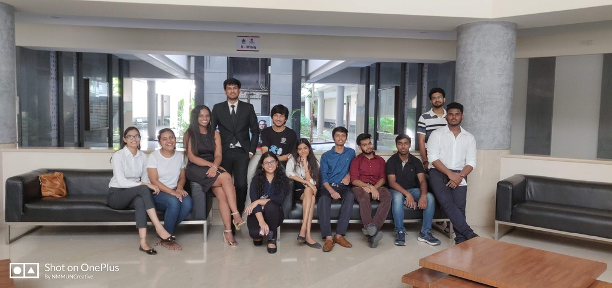
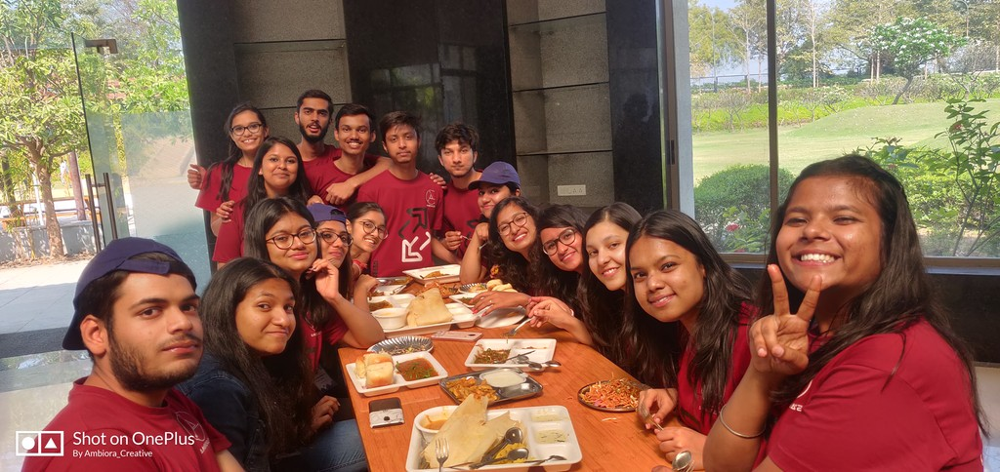
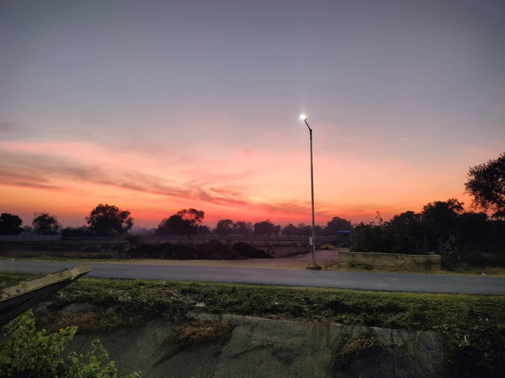
My UX Diaries
A personal exploration of everyday UX issues, awkward interfaces, and redesign ideas for more intuitive experiences.
Editorial seriesWriting piece pending
TODO: Add a real article title, short description, topic, and source badge when available.
Medium / Substack / LinkedInINDUSTRY PROJECTS
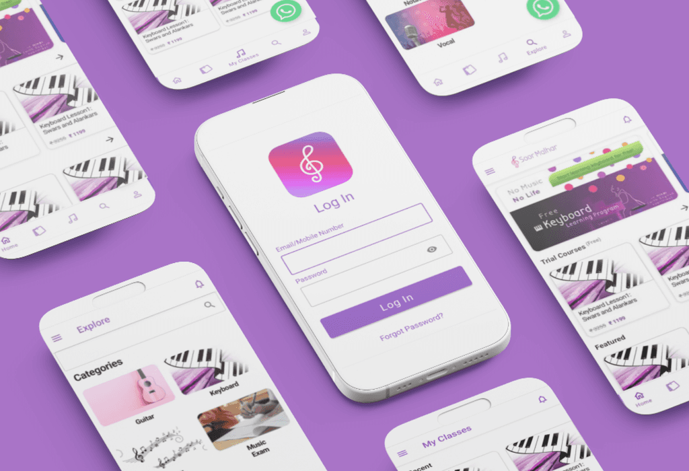
EdTech
Soor Malhar App
A screen redesigning project that introduced me to UX concepts and usability and taught me that only aesthetics do not matter in the digital world.
- Focus
- Music learning app redesign
- Outcome
- Clearer navigation, hierarchy, and mobile interactions
A foundation project in usability-first digital product thinking
View case study →SaaS
RUHL Ai Product
A product design and UX engineering project focused on creating and iterating a user-centered, accessible digital platform.
- Focus
- Decarbonization reports and compliance workflows
- Role
- Product Designer + Frontend Developer
Designed and implemented a responsive product experience
View case study →ACADEMIC PROJECTS
Nonprofit Evaluation
AZHARTT Usability Project
Evaluated the HARTT website using Nielsen's heuristics to uncover usability gaps in navigation, feedback, and structure.
- Focus
- Navigation, feedback, and content structure
- Method
- Nielsen heuristic evaluation
Usability gaps translated into actionable recommendations
View case study →Accessibility Audit
AZHARTT Accessibility Project
Resolved accessibility issues across screen reader, keyboard-only, low-vision, and motor-impaired experiences.
- Focus
- Inclusive interaction and assistive technology support
- Role
- UX Evaluator + Accessibility Reviewer
30+ accessibility issues documented and resolved
View case study →Healthcare Platform
TrialBridge Platform
Simplified a complex healthcare system into clear high-fidelity workflows for clinical trial discovery and management.
- Focus
- Clinical trial discovery and management workflows
- Role
- Product Designer
High-fidelity UX across 25+ workflows
View case study →DHRUMIL SHAH
About Me
Empathetic, user-focused designer passionate about Emotional UX - I love analyzing bad designs and celebrating great ones.
My Journey
Started with sketching → moved into IT and digital products → expanded into Marketing → now focused on building better digital user experiences.
My Purpose
I bridge the gap between engineering, business, design, and users to create products that are both usable and market-ready.
Current Focus
Deepening expertise in color theory, design systems, and typography while continuously improving real-world product experiences.
I like Sketching...
Working with Teams
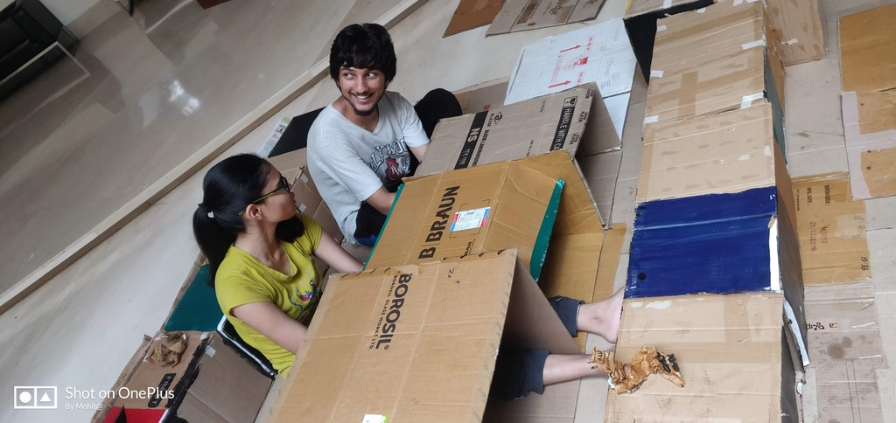
Travelling & Hobbies
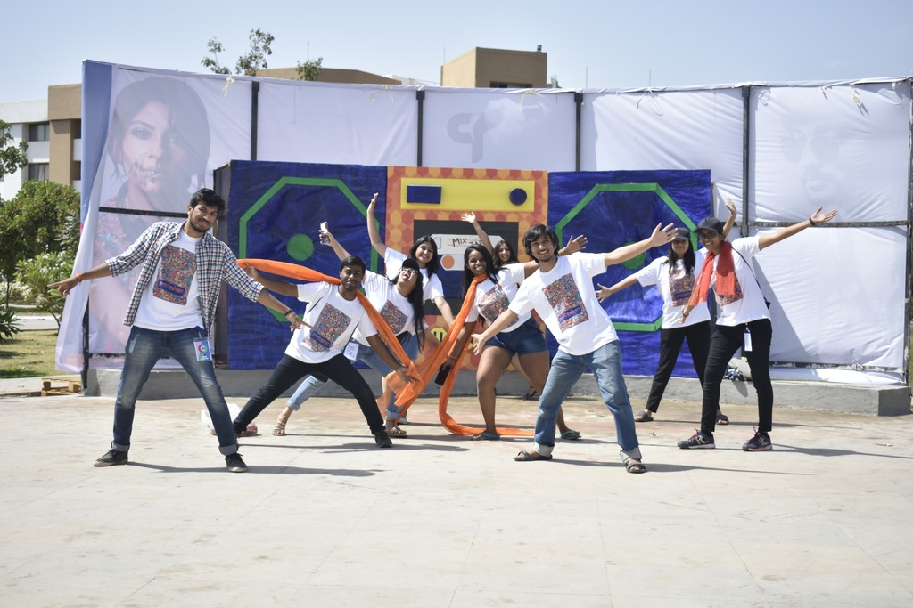
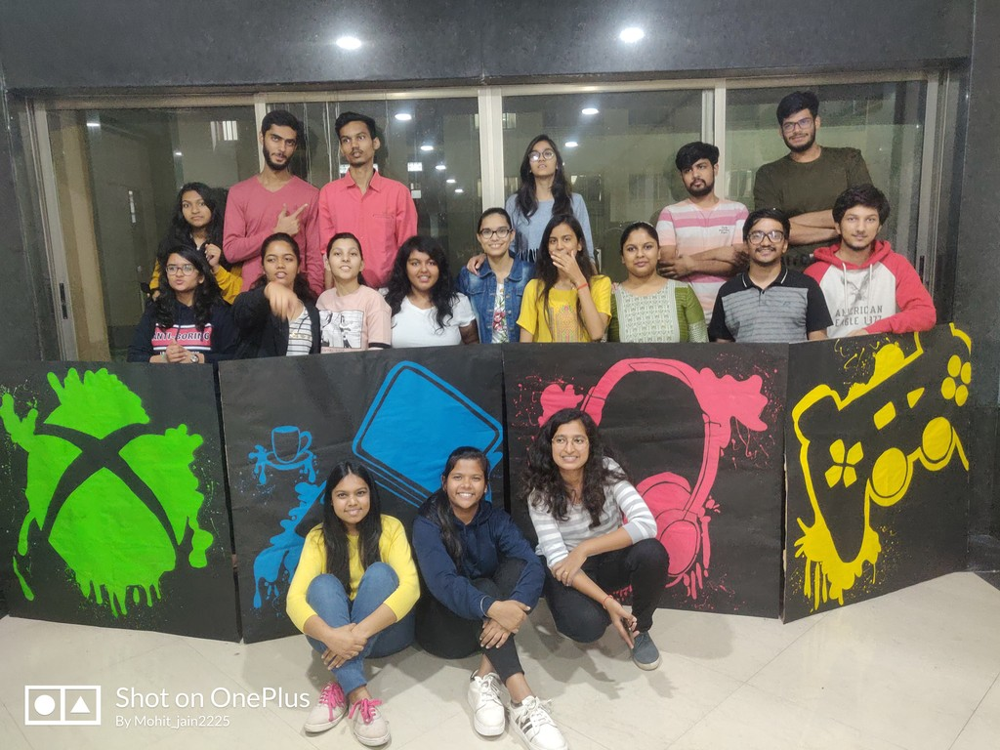
Let's Turn Ideas into Experiences
Got a UX project or idea? Let's connect - I'd love to help bring it to life.
Contact information
Email:dhrumilshah09@outlook.com Phone Phone:(949) 889 - 7848AI Lab
AI Lab
TODO: Build the full AI Lab page with Mindle, Space Shooter, WS6 concept game, workshops, and process experiments.
Writing
Writing
TODO: Add the full writing archive, including UX Diaries and source links for Medium, Substack, or LinkedIn posts.
Product: RUHL ai
The Beginning - From Idea to Product Direction
The RUHL platform emerged from a simple challenge: helping building owners understand complex sustainability regulations and take informed next steps, bridging regulatory data with RUHL's practical engineering expertise.
The Problem - Turning Regulation Into Experience
Local Law 97 sets emissions and energy compliance standards for buildings. The opportunity was to surface public data at the right moment and connect it to clear next steps.
- Bringing LL97 insights directly into a search-driven experience
- Making sustainability status visible and actionable
- Capturing structured builder inputs for guided support
Reflections - Designing at the Intersection of Strategy and Code
Building directly in the front end blurred the line between concept and implementation, allowing usability decisions to be tested in real time.
Soor Malhar App
Music Learning App Redesign
A screen redesigning project that introduced UX concepts, usability thinking, and the lesson that aesthetics alone do not make a digital product work.
The redesign focused on clearer navigation, stronger hierarchy, and more accessible mobile interactions across 20+ screens.
AZHARTT Accessibility Project
Accessibility Audit
Evaluated the HARTT website using usability heuristics and accessibility checks to uncover gaps in navigation, feedback, structure, and inclusive interaction.
Recommendations addressed screen reader support, keyboard navigation, low-vision readability, and motor-impaired access.
Healthcare · Product Design
TrialBridge
A patient-centered clinical trial matching platform created as an academic healthcare project.
[NEEDS ASSET]
Clean high-fidelity TrialBridge hero image. Prefer dashboard / trial discovery or a composed product view without annotations.
- Role
- Product Designer
- Team
- 6-person team
- Collaboration
- Mayo Clinic physicians + academic faculty
- Validation
- 3 physician testing rounds
Challenge
Clinical trial discovery asked patients to navigate complexity at an already difficult moment.
Patients needed to make sense of complex medical information, fragmented trial details, caregiver involvement, and real logistical constraints without the interface implying more certainty than the system could support.
What shaped the direction
Three constraints shaped the product direction.
Medical language needed support.
Terminology created comprehension barriers, so the experience needed to explain without oversimplifying healthcare information.
Caregivers needed a defined role.
Caregivers were important to patient support, but the design needed to respect patient control and information-sharing boundaries.
Fit was more than eligibility.
Travel and scheduling constraints could make a trial impractical even when the medical match appeared relevant.
Where I contributed
I owned specific parts of a larger team product.
As part of a six-person team, I owned key parts of onboarding, worked on trial comparison and caregiver interactions, led the educational-resources interface, and proposed the connection-request model for peer interactions.
Onboarding
I owned key parts of the onboarding experience, including how patients entered or synced medical information.
Trial comparison
I worked on how patients compared important trial differences without relying on memory.
Caregiver experience
I worked on Care Circle interactions and information-sharing controls.
Education
I led the educational-resources interface, including FAQs and the educational AI-assistant concept.
Peer connections
I proposed the connection-request model to reduce unwanted direct messaging.
Built within a six-person team: research synthesis, broader product direction, testing, and system-level decisions were collaborative unless identified above as my direct ownership.
Key decisions
Design decisions connected physician feedback to product changes.
Decision 01
Reduce manual onboarding effort without removing user control.
Challenge: Earlier concepts included detailed manual medical history entry and document upload, which added effort and complexity.
Team thinking: The team moved toward an EHR-sync option while keeping manual entry available for patients who preferred not to share records.
My contribution: I owned key parts of the onboarding flow and translated physician feedback into refinements.
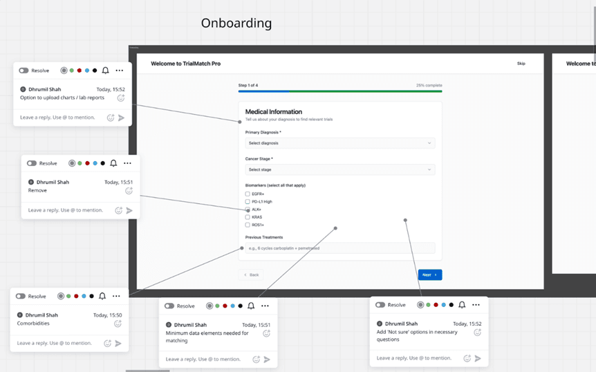
[NEEDS ASSET]
Final TrialBridge onboarding screen showing the choice between EHR sync and manual medical-information entry.
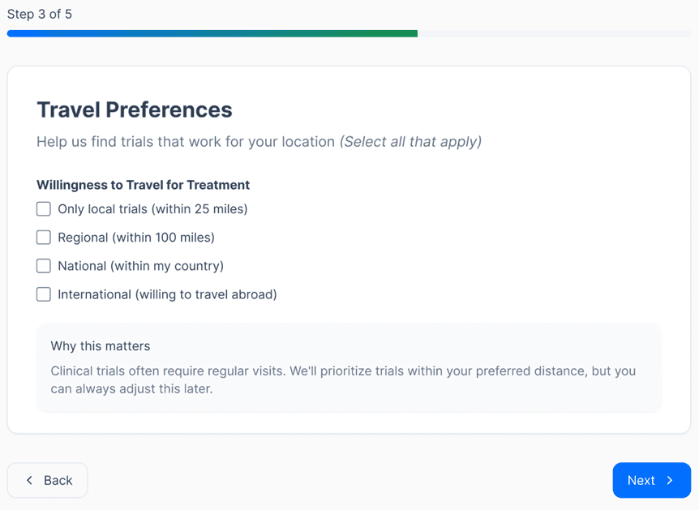
Decision 02
Help patients compare options without relying on memory.
Challenge: Trial options involved many details that could be difficult to hold in mind.
My thinking: Side-by-side comparison made important differences directly visible and reduced mental effort during selection.
Final decision: Trial comparison became a focused part of the guided-journey concept I worked on.
[NEEDS ASSET]
Side-by-side TrialBridge comparison screen showing differences such as eligibility, timeline, benefits/considerations, or other verified trial attributes.
Decision 03
Give patients more control over social and caregiver interactions.
Peer connections
Physicians raised concerns about unwanted or excessive messaging. I proposed a connection-request model so patients had to approve peer communication.
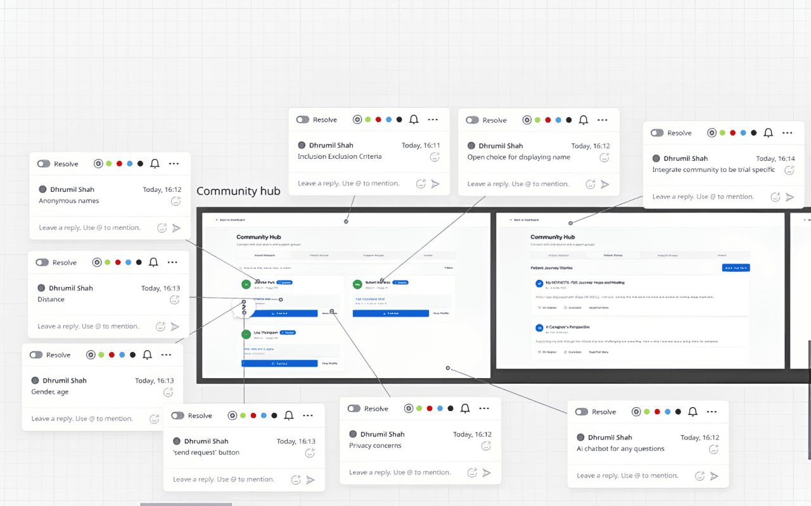
Caregiver control
Later physician feedback emphasized privacy and caregiver data sharing. The team responded with clearer patient control over caregiver participation.
[NEEDS ASSET]
Final caregiver-access / permission-control screen demonstrating patient control over shared information.
Decision 04
Use language that reflects what the system actually does.
Physician feedback showed that "Matching" implied more certainty than the system could support. The team changed the label to "Suggested Trials."
Final experience
Clean final screens still need to be added here.
[NEEDS ASSET]Clean final dashboard without Figma annotations.
[NEEDS ASSET]Clean final side-by-side trial comparison or trial-details screen.
[NEEDS ASSET]Clean final onboarding screen.
[NEEDS ASSET]Clean final caregiver/privacy-control screen.
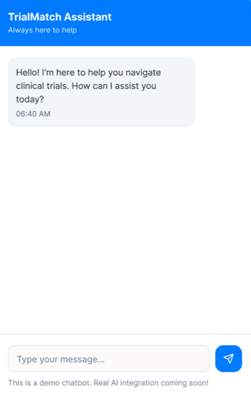
Validation & delivery
Physician testing helped the team refine scope, language, and control.
- Round 1Issues included unwanted community messaging and onboarding depth.
- Round 2Focus included privacy, data sharing, and terminology clarity. One visible change was "Matching Trials" to "Suggested Trials."
- Round 3Further discussion centered on onboarding depth and trial-suggestion accuracy.
What we chose not to build
Scope judgment
A clinician-side dashboard was explored but removed because it expanded scope and required many supporting features. The full physician/EHR decision-hub concept was not adopted; selected elements were carried into the final experience.
AI in my process
I used AI to move concepts into low- and high-fidelity prototypes more quickly, helping me communicate ideas with designers and non-designers.
Secondary note: This is separate from the product's AI-assisted trial suggestions and educational-assistant concepts, which were prototype concepts rather than production AI systems.
Designing beyond the interface
Reflection
What I'd carry forward
Working with physicians taught me that healthcare UX cannot be designed in isolation. I learned to balance clarity with clinical accuracy, institutional constraints, and patient control, and that a clear prototype can align a multidisciplinary team more effectively than an abstract diagram.
My UX Diaries
A personal exploration of everyday UX issues, from awkward interfaces to unclear instructions, with simple redesign ideas for more intuitive experiences.